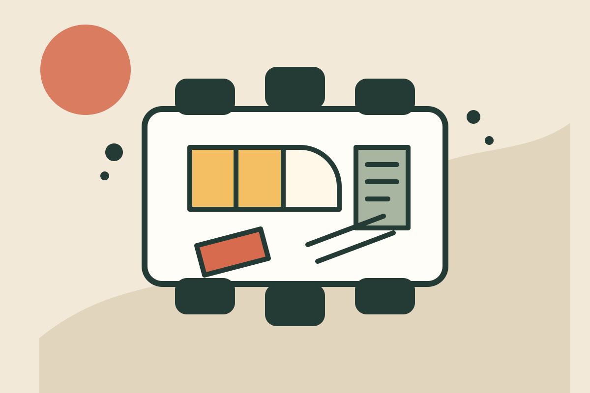

Learn something practical
Browse five invented program areas designed to test clear descriptions, audience cues, and long-form editorial reading.
Fictional nonprofit simulation
Juniper Commons is an invented community learning center where neighbors might explore practical skills, creative workshops, youth projects, and shared resources. It is not an operating organization and offers no real enrollment.

This simulated center imagines education as a welcoming public practice: specific enough to be useful, open enough to invite a first question, and honest about what has not yet been decided.
The concept intentionally relies on clear writing and a restrained visual system rather than a large photography library. Every program, person, date, and contact detail on this site is fictional test content.
These pathways demonstrate how one simulated organization can speak to different audiences without creating hidden pages or nested navigation.
Browse five invented program areas designed to test clear descriptions, audience cues, and long-form editorial reading.
See six fictional event concepts with sample dates and accessibility notes that do not represent live scheduling.
Explore simulated volunteer, teaching, and resource-support pathways without submitting an application.
A flat index keeps the most important routes visible without search, filtering, or collection behavior.
Read the complete fictional program index and its longer editorial descriptions.
Review sample event content while keeping dates and availability clearly non-operational.
Browse six invented resource categories presented as a static editorial collection.
See reserved contact data and the explicit limits of this fictional site.
Six invented team profiles demonstrate a realistic staff presentation without claiming real qualifications or employment.